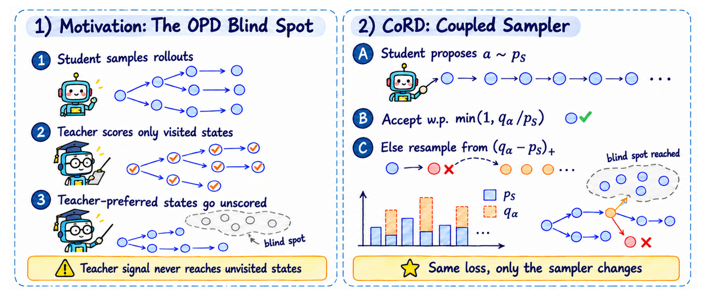
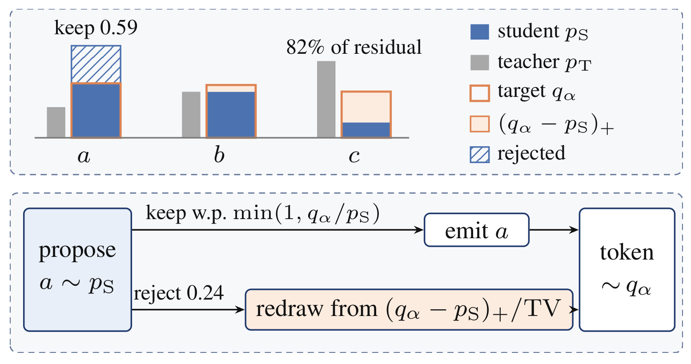
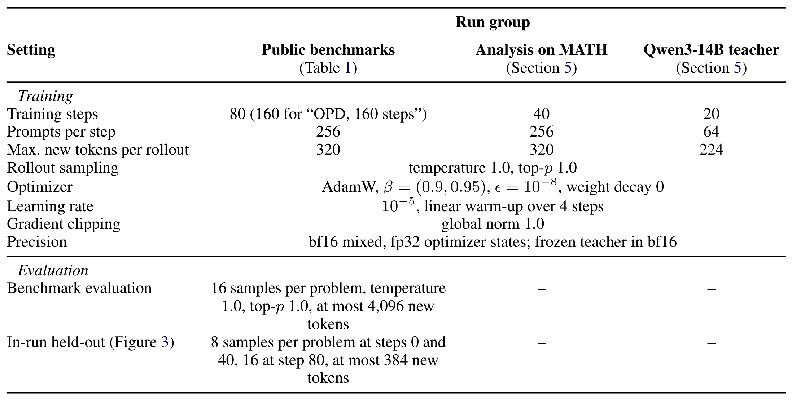
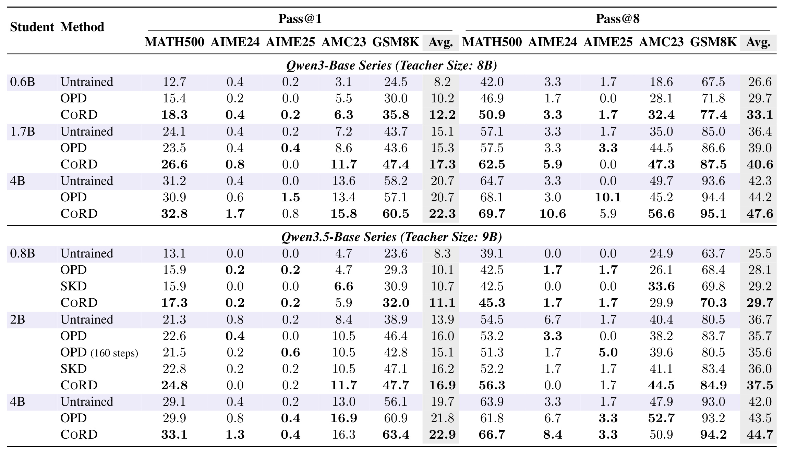
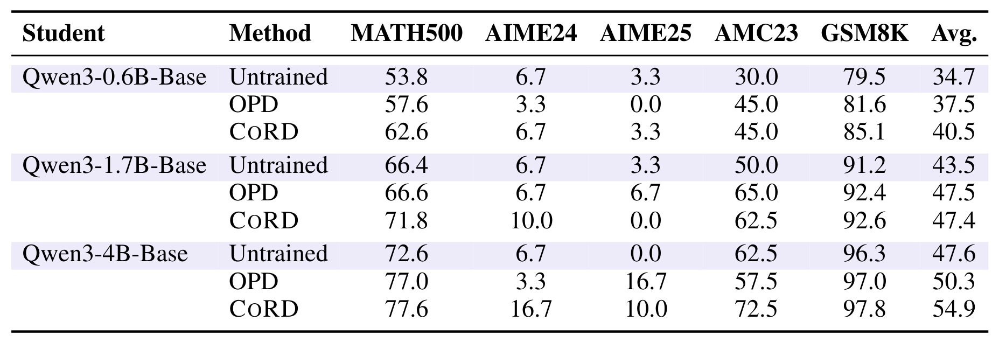
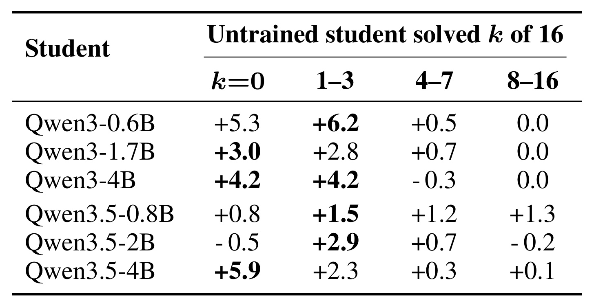
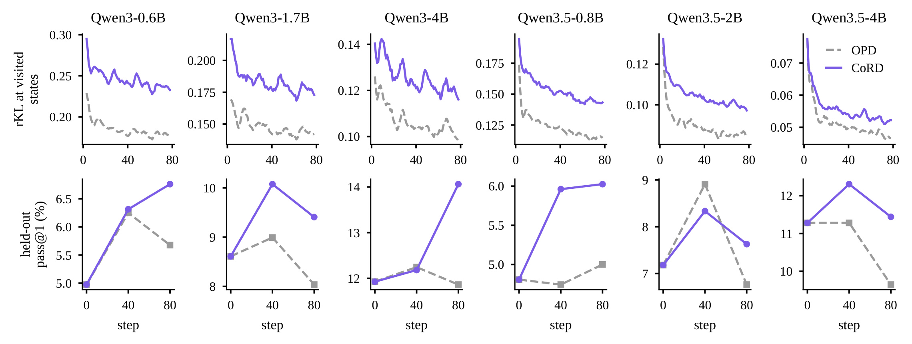
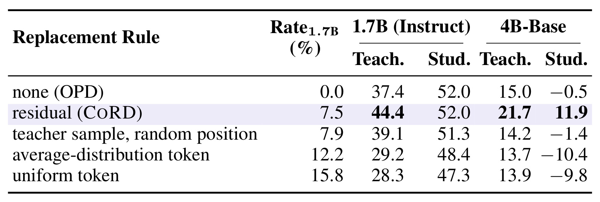
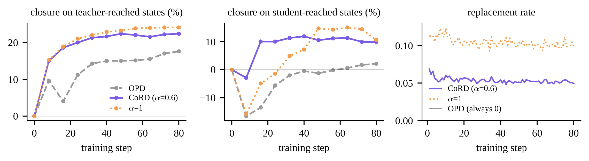
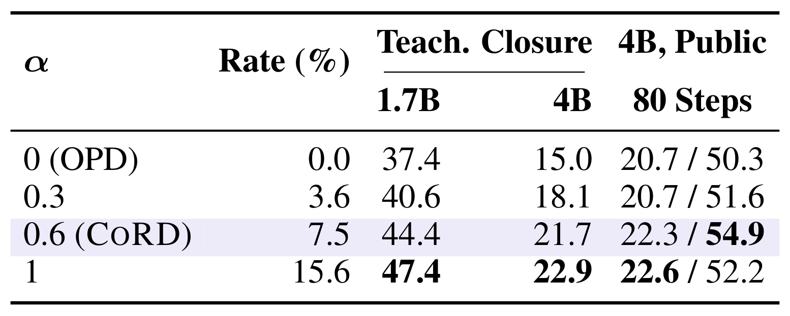

CoRD：用耦合采样补上在线策略蒸馏的盲区
清华大学的 Guhan Chen、Bohan Li 与哈尔滨工业大学（深圳）、南京大学、华为大模型数据技术实验室的合作者把投机解码的接受和补抽机制移到了训练采样器里。研究发表于 2026 年 11 月 5 日的 arXiv v1，核心改动是让一部分训练前缀更接近教师偏好的路径，同时继续用完整的下一词分布教学生。原文未给出本轮核验到的独立实现。arXiv:2611.07959
在线策略蒸馏让学生从自己的轨迹学习，因此教师只能在学生已经到达的状态给出监督。学生很少选择的教师推理分支也就很少得到纠正，即便这些分支从教师的角度更常见。
1. 背景和问题
自回归学生模型用前缀预测下一个 token。前缀包括题目、示例和已经生成的答案开头。一步选择同时决定了当前写出的字符与下一步会遇到的条件。一道数学题若先设未知量再列方程，后续需要保持变量、单位和代入次序一致。若先枚举几个数值，再从中归纳规律，后续需要的是另一套判断。相同题目下面，模型走到的两个前缀可能要求完全不同的下一步能力。训练里有没有见到某一步，与训练里有没有见到这道题是两个问题。只统计题目覆盖率和答案类型，会掩盖这层条件分布的差别。
离线序列蒸馏通常先让教师写完，再用这些文本更新学生。它能直接给学生看教师常用的解法，但自由生成时，学生走进自己的分支之后，教师范文里可能找不到与当前半成品匹配的恢复步骤。在线策略蒸馏（OPD）反过来让学生先产生轨迹，教师给沿途每个前缀打出一整组下一词概率，学生用逐位置反向 KL 学习。它保留学生推理时实际会撞到的错误情形，还能用完整词表的软标签区别近似替代词和明显离题的选择。相对于一条解答的末端正误标签，这种学习信号更密集。同一条轨迹的每一个前缀都能得到一次约束，但约束成立的前提仍然是该前缀真的被采到。
这里的盲区很容易和知识缺失混淆。假设教师常从题意提取某个守恒关系，而学生一上来就套常用公式。教师在共同的题目前缀确实会给守恒关系对应的 token 一定概率，学生也能在这个位置听见教师意见。只要学生在接下来的多个位置仍更倾向于套公式，能走到完整守恒分支的概率就会被逐步相乘压低。即使学生已经偶尔选中正确起手，也可能在后续的计算条件中缺乏密集监督。这解释了为什么在学生自己生成的前缀上，损失可以下降得很好看，同时某些教师常走的前缀一直难以拟合。作者关注的恰是监督能否实际抵达那段轨迹，而非 teacher logit 本身是否包含有价值的信息。
论文用冻结的前缀集合把这一点变成可测量的差异。训练开始前，各自收集一批由初始学生到达的状态，以及一批在同样起点上按教师分布到达的状态，再固定下来。在机制实验的 Qwen3-1.7B 指令模型和 Qwen3-4B-Base 上，教师状态起始反向 KL 分别约为学生状态的 2.4 倍和 1.5 倍。三组 Qwen3 Base 比较的相应比值是 1.9、1.7、1.5。这个测量也界定了结论的范围。状态由两种策略抽取，集合内没有逐项难度匹配，较大的散度说明两边条件分布的距离较大，不能据此把每个教师状态定性为正确或优质。冻结状态之所以重要，是因为若各训练步都用自己新采到的位置做分母，覆盖范围改变与同一位置拟合进步会相互混淆。
把采样全部交给教师是一种自然对照，也会带回训练与推理前缀的分布差。学生继续独立生成时，仍需要学会处理自己偏好的开头和犯过的错。固定比例插入教师词可以把轨迹推离原路径，但比例本身不告诉训练者何处值得打断。一个师生都同意的数字或单位，同样可能被随机改写。采用教师 top-k 的判定条件能排除明显离群的提议，却会把排序范围内两种强弱悬殊的概率当成相同的可接受结果。CoRD 的问题因而更具体：在确定一个温和偏向教师的分布之后，如何用最少的单词替换把学生提出的候选送进这个分布，同时还能精确知道改写发生在哪些位置、改写后进入哪一支。
投机解码已经包含这个概率工具。通常小模型提议，目标模型验证，利用接受率和残差补抽保持目标模型的输出分布。本文把这个工具用于生成训练数据，目标分布可介于师生之间，生成的轨迹用来选择学生蒸馏的条件。目标侧需要的是当下完整 logits，冻结教师在接受或拒绝时都在场。原文不以推理加速为目标，不能把投机解码已有的块验证加速直接移植成 CoRD 的训练省时结论。当前实现逐位置推进师生两套模型，论文的公平对照也让 OPD 走同一路径。训练系统真正接入时，必须把该约束与可先采样再批量打分的现有链路放到同一个成本表中比较。
这个视角对结构化序列也有解释力。一个目录路径在首个语义 ID 上走错时，后两级可能只有少量可用候选。一个工具代理若在最早一步选错工具，此后该学习的是恢复、补充约束或者终止，而教师首选工具的成功执行状态仍可能看不到。采样、监督和推理的三个分布必须分开观察。本文只在同词表的 Qwen 家族与数学任务中实证了采样分布的修改，但把分支访问、分支内监督及末端任务结果同时记录的实验设计，对这些链路仍有可迁移的价值。
单词空间中的最小改动还容易被理解成文本编辑成本的最小值。两者的粒度不同。某一步替换之后，生成状态已变化，下一次学生提出的 token 条件也变了。于是即使每个共享状态上的拒绝概率达到理论下界，末尾文本仍可能与一次纯学生采样产生的文本相去甚远。论文的证明是逐状态、逐词的；实验观察的是在这一规则下整条训练轨迹形成的统计量。这个边界有助于理解为何平均替换不到一成时，依然可能有显著的路径覆盖变化，也解释了为何不能用一个全局编辑距离代替采样器的日志。对多次生成的分支覆盖还要保留状态去重口径。表面相同的等式可能出现在不同变量定义之后，对应的条件意义也随之变化。若只按单词或公式短句做去重，观察到的覆盖变化会遗漏条件依赖。
2. 方法
2.1 先拆开训练目标与状态分布
作者把学生模型、冻结教师和同一问题前缀作为输入。经典 OPD 先用学生得到访问状态，随后把学生与教师在这些状态上输出的两个概率向量代入反向 KL。把损失写成带状态期望的形式后，有两个可修改的部位：条件状态怎么来，以及在该状态用哪个分布监督。CoRD 用耦合采样改变训练访问状态，继续用同一个反向 KL 在每个实际前缀上拟合冻结教师。
符号解释：$p_S$ 和 $p_T$ 是学生与冻结教师的下一词分布，$s$ 是题目及部分答案，$d_{p_S}$ 是纯学生采样产生的前缀占用分布。$D_{\mathrm{KL}}$ 先按学生概率给每个词加权，再累计学生与教师的对数概率差。两种算法每一步都在同一个完整词表上比较师生。更换访问分布会改变优化实际看到的前缀与频率，即使逐状态公式保持相同。

Figure 1 左边三格有意分开学生走过的线、教师给这些节点打分的位置，以及外围未被进入的教师偏好分支。蓝点表示某个实际前缀经过一次具体选择之后所处的状态，节点连线不是训练样本编号。教师能够在蓝点上评估所有可能的下一步，虚线圈里的状态却要求先进入另一支，概率向量在上游一次给出并不等价于对这些下游状态逐个给分。右边先让学生提议，然后以目标分布与学生概率的比率决定是否保留，拒绝时从学生缺掉的目标质量补抽。右下方用橙色节点表示从该前缀换出的一步，它使后续重接到左侧没被访问的区域。蓝、橙两组柱形画的是同一词位上的两组概率，强调了两条分布相交的质量应保留，目标多出来的面积应通过补抽补齐。最下方标明损失保留，所以用这张图解释增益时，应该先问访问的新状态在哪里，再看同一套反向 KL 在这些状态上能教会什么。这个图也把训练和服务边界标出来了：这里的接受分支是采训练轨迹的路径，更新后的学生在公开评测中自己生成。教师分支的引入带来的收益来自学生参数改变，不来自评测时临时接管生成。把虚线区域视为教师概率更高的区域也更准确，其中并没有逐节点正确性标签，图示不能证明每次橙色跳转都让答案更接近正确。遇到教师的两条近义表达都可成立时，耦合依然按概率质量分配。作者随后用冻结状态散度和公共评测分开检验这两个层面，避免一张框图同时承担机制与效果的证据。
2.2 教师倾向的目标分布
对同一状态的完整 logits，作者按同一词表逐项取幂、相乘和归一化。这个做法可视为先把师生的对数概率作加权平均，再做一次归一化。比较两个词的相对赔率时，教师赔率与学生赔率按对数尺度插值。学生可以继续保持自己在若干词上的次序，教师的高赔率会拉动其余候选。该插值因而与以固定概率在两台模型间掷硬币、整次挑其中一个分布的算术混合有不同的路径频率。
符号解释：$v$ 是待评价 token，$u$ 枚举共同词表 $V$，$\alpha$ 在零到一之间，分母 $Z_\alpha$ 是每个状态单独计算的归一化量。$\alpha=0$ 时 $q_\alpha$ 就是学生分布，$\alpha=1$ 时 $q_\alpha$ 就是教师。若师生在当前前缀已经同意，改变插值权重也不会引入替代。实现时可以在对数空间用 log-sum-exp 算归一化项，避免低概率幂运算的数值损失。
符号解释：$q$ 在共同词表上的所有概率分布中取值。把两项对数差合并后，目标变成相对于 $q_\alpha$ 的 KL 加上只依赖归一化量的常数，因此最小点是几何插值。这个最小化定义描述的是采样目标的构造，学生更新时仍然拟合教师。它也给出了一个重要边界：若某个实现先做各自不同的 top-k 或 top-p 截断，双方正质量支持可能分裂，无法直接用本文对全词表正概率的推导解释端点和残差。原实验中训练采样的温度为一、top-p 为一，双方词表逐项对齐。
2.3 最大耦合的接受和补抽
确定目标边缘分布之后，可以直接从它采样。CoRD 同时保留一份学生提议作为配对对象，从而能精确量出因目标而发生的改动。具体地，每次从学生取候选并抽一个零到一的均匀随机数。只有学生在某个词上的质量超过目标时，这个词被拒绝的概率才大于零。拒绝后只在目标多于学生的词上按缺口大小分配概率。每次实际发出保留词或补抽词后，师生都基于这个新前缀进入下一轮。
符号解释：$a$ 是学生提议，$A(a)$ 是保留概率，$r(v)$ 是拒绝之后发出 $v$ 的条件概率，$[\cdot]_+$ 取正部，$\operatorname{TV}$ 是总变差距离。若总变差为零，算法总会接受，无需计算一个零分母的补抽分布。被拒的词在残差中概率为零，所以拒绝与实际换词是同一事件。单独记录哪些词被接受、哪些位置进入补抽，可以对比不同采样器在干预频率以外的差异。
符号解释：$Y$ 是实际发出的词，公式分别把它来自保留事件和残差事件的质量相加。任意合法配对使两个随机变量同时等于某个 $v$ 的概率都不能超过两个边缘质量的最小值，逐词相加就得到最少改动的下界。接受分支正好把全部相交质量用完，所以这个下界可达。证明固定当前状态，延展到整条序列时依靠每个新状态继续按同一目标转移。它没有为不同历史间的文本编辑距离给出全局下界。

Figure 2 先用蓝柱画学生概率，灰柱画教师概率，橙边画出插值目标。三词例子的学生分布是 $(0.6,0.3,0.1)$，教师分布是 $(0.2,0.3,0.5)$，用权重 $0.6$ 得到约 $(0.356,0.344,0.301)$。左侧候选 $a$ 是唯一可能被拒的词，提议占六成，其中保留概率约为 $0.356/0.6=0.59$，于是拒绝事件的无条件质量约为 $0.244$。在这个事件里，$b$ 的未覆盖质量约 $0.044$，$c$ 的约 $0.201$，用两者之和归一化后，约有八成二的补抽会选 $c$。右图最外边的输出框说的是所有提议事件合并之后的边缘。若只看被拒位置，看到的是残差分布，绝不能拿它与完整目标直接比。$b$ 在两台模型里的原始概率同为三成，归一化后却有正残差，这是因为几何插值的归一化量小于一，说明残差判断依赖的是目标相对学生的最终权重。对比教师 top-1，教师最喜欢 $c$，会拒绝 $a$ 和 $b$ 共九成提议，且补抽教师仍可能返回 $a$。两种接受策略回答的提问不同：一边比较最终分布欠多少质量，一边判定某个词是否属于一个固定排名集合。在本文的测试配置下，图里的计算可以用原始 logits 复现，也可以用于核查一次实际记录的接受率与总变差是否一致。这个例子只是概率恒等式的可视化，不能从三词分布推断数学任务会有多大提升。按条件态验算时，学生原有的中间词和末词全部被保留，二者各得到一小块新质量，首词只保留与目标相交的部分。可以分别统计原始提议频率、被接受的质量和补抽质量，然后把后两者相加。只校验整体直方图还不够，因为直接从目标抽样也能得到相同直方图，却没有最小改写保证。若模型实现出现残差为零却仍进入补抽分支，则应回查浮点稳定性与两向量是否使用同一个温度。
2.4 训练目标、梯度与推理边界
符号解释：$d_{q_\alpha}$ 是耦合生成的前缀占用分布，学生与教师 logits 的条件都是同一个实际访问前缀。训练把采样结果作为已经给定的样本，不对离散接受或补抽事件求梯度，也不穿过 $q_\alpha$ 的采样依赖关系。优化器接收的是逐状态反向 KL 对学生分布的梯度。等价地，从已知 $q_\alpha$ 直接采样能给出相同的状态分布与期望更新。耦合的可辨识贡献是把每次离开原提议的事件变成可控、可检验的记录，并在给定目标下最小化改动概率。
作者不做重要性回权。若沿整个前缀把学生与目标每一步概率比乘起来，并将蒸馏项乘回这个比值，会把想要研究的分布变化消除。较长路径上的比值连乘还会引入额外波动。采用这一目标之后，即使访问样本不完全来自自由学生，也能明确每条样本的机制和方向。训练停止后不用保存替代词表、残差缓存或教师 KV。评测学生按自身分布采样，运行端唯一改变是学生权重。训练阶段仍须在每个实际 token 条件位置得到教师 logits。原文通过让所有对照共享这一实现条件隔离采样规则影响，部署到教师后打分、异步批调度或大词表分片的环境时，需要另外测量成本。
3. 实验结果
3.1 三种实验运行组
公开组使用同词表的两套模型。Qwen3 的 0.6B、1.7B、4B Base 对应 8B Base 教师，Qwen3.5 的 0.8B、2B、4B Base 对应 9B Base 教师。机制组把学生换成 Qwen3-1.7B 指令版和 Qwen3-4B-Base，教师仍是 8B Base，使用冻结前缀观察前后距离。最后的 14B 教师小实验再看更强教师下是否仍有同方向效果。它们的预算、学生版本、输出和评价样本均应随数字写清。

Table 5 的三列首先区分训练和评测两个半区。公开组每步取 256 道提示、通常 80 步、每条训练轨迹最多 320 个新 token。分析组保留相同的提示数和轨迹上限，只做 40 步，14B 教师组进一步降到 20 步、每步 64 个提示、最多 224 个新 token。三组共享 AdamW、全局范数裁剪、四步学习率预热和全分布采样，并采用 BF16 混合精度与 FP32 优化器状态。这个布置让同行能对照相同学生和同一运行组中的不同方法，但也解释了为何不能把分析组的闭合值直接当成公开组的训练进度。下半区只有公开组报告公开题，评测最长 4096 个新 token，与训练 320 个不同。运行中的留出组又用不同预算，在零步和四十步每题八条，八十步每题十六条，最长 384 个新 token。两种评测的答案检查也不同。公开组用数学等价判定，超过三秒算错，留出组用归一化精确匹配，优先取最后一个方框答案。这些协议差异使曲线纵轴和公开主表的绝对数值不可直接对齐。公开训练来自一份固定洗牌后约五千题的 MATH 集合，去掉提示超过 512 token 的小比例样本，80 步大概重复四轮。作者检查了训练和 1919 道公开评测题之间的重合，报告有一道 MATH500 重复，其他四套没有找到。这是一条作者按自身筛查方法得出的数据边界，适合在复现表中保留，不能当成所有语义近重复已排除的保证。二示例提示贯穿训练和评测，生成遇到下一题标记停止，因而也不应与聊天模板下的其他公开成绩混读。训练和评测长度差距还意味着公开正确率包含把局部策略迁移到更长解答的能力，而采样器只在训练长度内提供教师引导。
每道公开题采样 16 个解答，温度一，得到一个正确次数。给定生成预算，pass@k 估计至少一次正确的概率。公开主表按五个数据集先各算再等权平均，不是将 MATH500 和 GSM8K 大集合的题目直接与两个小型 AIME 一起微平均。给同一列增加小基准里的一个正确题，影响可能超过大基准里的一个，因此需要结合绝对题数和条件切面解释。
符号解释：$n$ 是每题采样数，$c$ 是其中按判分器确认的正确答案数，$k$ 是允许抽取的候选数。分式表示从现有候选随机选 $k$ 个时全部选中错误答案的比例，若错误候选少于 $k$，这一项为零。$k=1$ 回到每题的正确样本占比，$k=n$ 则只看这批候选中是否有正确解。此定义也说明 pass@8 不是八个样本的多数票正确率，更不是评测服务能自动挑出正确答案的成功率。
3.2 五项公开数学评测

Table 1 左右两大指标块列出相同的五个基准，各行的比较单位是同一学生和教师组合。表上半段的 Qwen3-0.6B 在 CoRD 下平均 pass@1 从 OPD 的 10.2 到 12.2，pass@8 从 29.7 到 33.1。相对更大的一组，Qwen3-4B 的两个均值从 20.7 到 22.3、从 44.2 到 47.6。下半段的 Qwen3.5-2B 从 16.0 到 16.9、35.7 到 37.5，改善更小，但 OPD 的后者还低于未训练起点 36.7。六个学生在平均口径上都有改善，原文按未四舍五入的结果给出 pass@1 的 0.9 至 2.0 个百分点和 pass@8 的 1.2 至 3.4 个百分点。平均不能抹掉局部回退：Qwen3-4B 在 AIME25 上由 1.5 降到 0.8、pass@8 由 10.1 降到 5.9，Qwen3.5-4B 的 AMC23 也有回退。反过来 MATH500 和 GSM8K 的 pass@1 对六个学生都提升，0.6B 的 GSM8K 从 30.0 到 35.8。两套 AIME 各三十题，基准间等权也令单题更可能影响均值，因此读这些变化需要保留题量。SKD 和 160 步 OPD 只出现在少数学生，不能把它们当成覆盖所有模型的对照。正文检查 Table 1 中每个运行的可提取答案占 99.5% 至 99.9%，结果不太可能仅来自格式遵循，但该检查没有逐步判断过程质量。表中没有足够的训练种子区间，不能从每个分点差异推出统计显著。表中另外三组平均值也给出了配对检查。Qwen3-1.7B 的两个平均指标由 15.3、39.0 到 17.3、40.6，Qwen3.5-0.8B 由 10.1、28.1 到 11.1、29.7，Qwen3.5-4B 由 21.8、43.5 到 22.9、44.7。训练前就会的题与新出现的解法在汇总分数里没有拆开。一个由常见简单题带来的贡献和一个由少量难题多次命中带来的贡献，可能给出同样的平均增量。若把该表作为工程立项依据，可以先看两套教师各自覆盖哪些原先学生表现低的题，再把五个评测集按题数加权做敏感性分析。论文给出的等权比较仍作为原结果保留。尤其不能从两套模型结果直接推出参数量更大一定更好，因为两代模型的教师、模型家族和起始能力本来不同。若能获得每题的配对输出，可报告净救回题与新失去题的比例，再将其与各自基础分数相联系。
SKD 在 Qwen3.5-0.8B 和 2B 上采用论文公布的教师 top-25 条件，拒绝后从完整教师分布取词。两组的平均 pass@1、pass@8 均介于 OPD 与 CoRD 之间，但 SKD 实际改写率仅为 0.7% 和 0.6%，CoRD 为 6.8% 和 5.7%。这是完整采样规则的比较。它同时改变频率、位置与补抽去向，单靠主表无法把差异全归于残差。作者因此在机制实验中再做方向对照。Qwen3.5-2B 延长 OPD 至 160 步得到 15.1、35.6，低于同组 80 步的 16.0、35.7。这个单模型反例说明继续沿用同一采样器未必解决覆盖，无法外推为所有更长训练都会退步。

Table 6 把每题使用 16 次采样的成功率单列出来。小模型和 4B 的平均 pass@16 分别从 37.5 提升到 40.5、从 50.3 提升到 54.9。中间的 1.7B 则从 47.5 降到 47.4，尽管 MATH500 从 66.6 涨到 71.8，AIME24 从 6.7 涨到 10.0，AIME25 同时从 6.7 降到 0，AMC23 从 65.0 降到 62.5。4B 在 AIME24 由 3.3 到 16.7，但 AIME25 由 16.7 到 10.0，体现了不同题集对生成分布变化的响应可以相反。这列只要本批十六次中答对一次就记为一题成功，重复生成已经能解的问题不会额外贡献；pass@1 更强调单次输出命中率。两者同时看，可以区分更常答对和偶尔能解的题面变宽。1.7B 在这两套 AIME 各改动一两题就能改变名次，作者也没有给出能支持这种小差异稳定的区间。表格只覆盖 Qwen3 三个学生，不应把 1.7B 的反例误标为 Qwen3.5，也不应据此填出 Qwen3.5 三个学生在五基准上的具体均值。在固定的十六次样本里，原本有一条正确解答的题，即便现在有五条，仍记同一个命中。反之，小幅改变解码路径可能只增加对很少几题的一次命中，却对更低预算的通过率贡献有限。把两个预算的结果放在相邻表格，读者就能区分这两类变化。
3.3 难度分桶和训练曲线

Table 2 每行都先用该学生训练前十六个候选中的答对次数划分自己的题目池，再看 CoRD 相对 OPD 的 pass@16 变化。六个学生最大增益都落在起点答对不超过三次的格子。Qwen3-0.6B 的一至三次组是 6.2 个百分点，Qwen3.5-4B 的零次组是 5.9 个百分点。Qwen3.5-2B 零次组下降 0.5，最大值在一至三次组的 2.9。Qwen3-4B 四至七次组也有下降，说明低难度或中间区间仍可能被新的分布牺牲。单个分桶结果没有给出足够分母与区间，且六个学生的难度桶是分别定义的，因此同一列在不同行可能对应不同题。作者报告这里对 1919 道题分组并根据题级估计计算差值，不能把某行四格不加权平均，拿去核对五基准等权的 Table 6。比较可转移到推荐实验时，类似的难度分桶应在模型更新前用固定规则定义，避免因为一个模型更新后命中率改变，导致其困难组成员也改了。分桶还可以用更多独立采样或初始置信度做敏感性检查。十六次零命中只表示该批样本没成功，不能给真实成功概率画出绝对零的结论。

Figure 3 每列对应一个学生，上排是训练当时遇到的状态的反向 KL，按五步滑动平均，下排是约两百道训练分布留出题在零、四十和八十步的 pass@1。紫线在六个学生的上排始终更高，含义是耦合采样持续遇到相对教师有更大差异的前缀，不能把它和 OPD 在另一套前缀上更低的值直接比作收敛质量。下排展示了八十步时 CoRD 的留出 pass@1 都较高，过程没有全程占优：Qwen3.5-2B 在四十步低于 OPD，二者随后均下降；Qwen3-1.7B 的 CoRD 也在中间点之后回落。每列纵轴范围不同，不能按曲线振幅目测跨模型提升大小。留出曲线只在三个点测量，且末点采样数由八增到十六，估计精度随之变化。解读这一图应先把纵轴分母固定住：访问态 KL 检查训练实际抽到了什么，冻结态 KL 才能比较同一类历史的拟合，留出题准确率验证学生独立生成。训练优化看见较高的蒸馏损失时，需排除简单数值问题，再用覆盖变化解释差异。它本身也不是训练策略一定更好的证据。
3.4 冻结状态集和替换对照
符号解释：$\overline{D}_{\mathrm{before}}$ 与 $\overline{D}_{\mathrm{after}}$ 是同一组前缀上相对于冻结教师的平均反向 KL，分别在训练前和训练后测量。闭合率是初始散度被消掉的百分比。负值表示偏离增长，并非题目正确率下降了相同的百分点。两类前缀在训练前各自由初始学生的分布和 $\alpha=1$ 的采样分布生成，因此比较同一列时分母固定，教师侧和学生侧之间仍有各自的起始差异。

Table 3 的 Rate 列只报告 1.7B 指令学生的实际替换频率，右边两组各分教师前缀和学生前缀。在四十步的 1.7B 教师侧，残差采样以 7.5% 干预闭合 44.4%，无干预是 37.4%，把随机位置交给教师的对照用 7.9% 干预只到 39.1%。这组最能分辨从教师采到的词和恰当分歧点的联合价值。另两条对照保留同样形式的接受测试，拒绝后抽学生历史平均分布或均匀词，实际干预率提高到 12.2% 和 15.8%，教师侧反而只有 29.2% 和 28.3%。即使接受规则代码相同，选出的词改变了后续前缀，后面的拒绝率也随之改变。均匀词会进入师生都不偏好的状态，起步访问态上的师生平均总变差是 0.40，而残差替换是 0.15。4B 的四十步教师侧由 15.0 到 21.7，学生侧由负 0.5 到正 11.9。平均分布和均匀对照在 4B 的学生侧闭合分别为负 10.4 和负 9.8。这些比较支持干预方向和位置重要，也留下剩余混杂：方向一变，整条后续轨迹和实际替换频率也改变。与随机位置教师对照接近的只是平均干预量，不能据此声称每种分支都被同样数量的教师干预覆盖。还要看学生侧同列的代价。1.7B 的纯 OPD 与残差法在学生侧都得到 52.0，而 4B 两条运行的学生侧明显分开。不能从后一行把保持学生分支的能力无条件套到所有学生。随机位置教师控制在 4B 教师侧是 14.2，在学生侧是负 1.4，说明只获得教师分布的一个替换词，仍需跟当前位置的师生分歧配套。若系统只暴露教师前若干名候选，需要先补齐完整词表概率才能重建这组采样比较。还可以按初始散度分桶，检查收益是否被少数极不一致的冻结前缀驱动。均匀词对照会破坏数学语法，换成语法合法但不沿教师偏好抽词，可以继续缩小两套对照的差别。
论文还对采样精确性做两层校验。小词表上的发词直方图随四档权重变化，与理论目标一致，实际拒绝率和解析总变差相差不超过 $3\times10^{-4}$。用真实 4B 学生、8B 教师的两百个提示复查，零权重无拒绝、梯度与纯 OPD 相同。四十步机制组中，非零设置每步的实现替换率与同一 logits 算出的均值距离相差不超过 0.003。前者检查随机采样实现，后者检查训练过程，二者都不衡量模型是否更接近正确答案。另以 Qwen3-14B 教师给 1.7B 学生蒸馏二十步，教师侧闭合比 OPD 高 4.2 个百分点，是第二位教师上的方向验证，没有对应五项公开题的质量对照。
3.5 权重扫描、干预曲线和成本

Figure 4 左中两栏分别追踪 4B 在固定教师和学生状态集合的闭合率，每八步检查一次，右栏画当前训练访问态上实际替代的 token 比例。教师侧的非零设置在早期与 OPD 分开，作者指出默认设置十六步达到的教师侧闭合，OPD 在八十步也没有达到。这个观察只适用于这张图的冻结前缀和学生，不能折算成五倍达到同一准确率的训练加速。学生侧早期曲线有负值，尤其权重一的纯教师状态采样开始有较明显下滑，之后恢复，显示追赶教师分支也会重新分配学生已有分支上的训练机会。右栏默认设置约由首步 6.9% 到末步 4.9%，纯教师目标的替代率更高且也有波动，零权重始终为零。正文说替换随训练慢慢回落，是总体趋势，不能理解为每一步严格下降。当前前缀的总变差随两模型接近可以降低，训练策略同时在改变当前会看到哪些前缀。要复现该曲线，需要同时保留当步真实接受日志、同批 logits 的解析值及固定状态上的独立测量。只看线上一条总替换率，无法区分学生学会了教师路径，还是采样分布碰巧进入了原本更容易一致的前缀。

Table 4 中第一列权重从零到一，第二列的替换率从 0.0% 增到 15.6%，其分母仍是 1.7B 的运行。中间 1.7B 与 4B 两列是四十步时固定教师前缀的闭合率，两列均随所测权重增加。右边 4B 的公开指标来自八十步，分别列 pass@1 与 pass@16。权重一得到最高的 22.6 平均 pass@1，但 pass@16 只有 52.2，弱于权重 0.6 的 54.9。权重 0.3 的 pass@1 和 OPD 均显示 20.7，pass@16 则从 50.3 到 51.6。更高权重能把训练前缀引向教师，同时会改变生成候选的多样性和学生自己出错的分支占比。实验能确认的是这些点的指标取舍，不能从一个取舍直接确定原因，例如不能在没有逐题轨迹的情况下断言权重一的下降全部来自多样性减少。若按任务预算选择权重，比较表里必须把训练闭合的学生与步数、公开 pass 的学生与预算分别保留。仅把最高闭合点当成最优超参会错过 0.6 下较好的高预算结果，也会忽略同一权重对较小学生是否相同的问题。论文附录证明的是固定状态上插值分布相对学生的 KL 随权重不减，表里看到的是几种训练运行后的经验趋势，二者层级不同。表中还可单独看权重从 0.6 到一的增量。在 1.7B 记录里实际干预率从 7.5% 到 15.6%，但冻结教师侧闭合只多三个百分点，4B 同项只多一点二。这里无法把两种学生的闭合变化按替换率直接折算，因为这张表没有并列 4B 的替换率。即使在 1.7B 一列，也应把这个关系当成总量的经验比较，不能当作多替换一个词的因果增益。选择权重时先明确目标是教师侧距离、单次解答准确率，还是有限抽样下的覆盖，再把同一学生上的代价与学生侧散度并列。单列公开组也无法判断同样的干预强度放到指令版学生上是否合适。
逐步拿教师 logits 是训练接入的主要成本。作者报告同一路径的不同方法步时相差不超过 2.3%，其中 OPD 也被安排在每个位置调用教师。现实 OPD 的学生轨迹可以独立采完，再让教师用一次打分批次处理已有前缀。CoRD 则要等当前教师结果做接受或替换，才能生成下一步真实前缀。运行框架如果支持并行验证多个提议，其收益也需要实测，因为本文没有给出这项优化。附录列出公开主表十二组 OPD 与 CoRD 训练约 670 加速器小时，机制组约 230，SKD 加额外长 OPD 约 170，均没有把所有公开评测候选生成纳入。对复现者来说，该预算适合估算论文运行的数量级，设备型号、序列并行、吞吐和服务调度另有缺口。本文的效率证据是同一实现下的成本对照与特定诊断更早闭合，尚没有生产墙钟、吞吐或推理端成本的对照实验。
4. 总结
4.1 这篇论文把改动限定在哪里
CoRD 最清楚的部分是把学生学习到哪里与在那个位置学什么拆开。两个方法共享全词表反向 KL，学生当前能进入的训练前缀变了，优化看到的状态分布和频率也会变化。使用耦合允许同一状态下追溯从哪个提议词出发、在哪里拒绝以及补抽去了哪边，还能用总变差验证它的改动率。正因如此，判断论文的主要结果时可以把三层证据对起来：采样器的数学正确性有直接边缘概率证明，机制实验支持固定教师侧前缀较快缩小差异，公开评测说明在指定模型和数学任务上学生自己的生成表现平均改善。这里没有必要借更高的访问态损失或更长的 OPD 对照，额外推断所有增长都来自新分支的正确推理。
推荐链路最接近的场景是学生生成结构化候选，教师在关键路径层能给一个完整的条件分布。若约束词表包含多个级别的合法前缀，首先要保证两个模型在同一个有限支持上评估，否则两者的相交质量会混入目录合法性差异。相比把整个教师答案硬塞进学生训练集，最小干预可以让实验同时追踪原先会走的候选分支和教师偏好的可用分支。评测则需要把固定位置上的一致性、目录合法命中率、有效独立 item 数及用户侧排序指标分开。如果一个新的师生共同词表其实只是生成文本协议相同，而各自映射到的商品候选不同，不能照搬本文的逐 token 残差。
4.2 局限与后续跟进
- 任务外推有限。 作者只用公开数学题验证终态成绩，冻结教师前缀中也没有可靠的逐步正确性注释。工具代理或推荐的分支收益还取决于真实执行与用户反馈，用离线正确率不能替代那些观测。
- 可观测增益有口径。 两套 AIME 的题量都很小，局部回退存在，且公开主表没有足够的训练种子区间。一次抽样中的更高通过率与训练分布的稳定改善应分别验证。
- 教师接入需要同步反馈。 相同代码中的等步时受人工配平约束，常规 OPD 可后打分，本文没测这条生产基线。更大的教师、不同模型分片或低并发会把相同采样规则置于不同成本区间。
- 方法要求共同词表与一致掩码。 全词表软概率的证明约束了分布支持，截断、工具权限和语义 ID 合法性都可能改变支持。教师本身的解题错误和偏见也可能随轨迹覆盖一并扩散。
- 建议先做等状态诊断。 固定一批学生偏好和教师偏好的可执行前缀，按训练步复查相同前缀的散度与结构合法率，再将结果与实际访问态散度并列。若仅动态损失升高，证据只支持覆盖发生改变。
- 对齐实际采样预算。 以同数据、同学生和同教师对照直接从插值分布抽样、CoRD 最大耦合和匹配干预率的随机位置教师接管。用共享随机种子报告触发在哪些位置，确认差异来自方向而非评测抖动。
- 建立墙钟基线。 把自然 OPD 的独立采样加批后打分纳入对照，分别记录教师每轮同步等待、实际发词量和最终准确率随加速器小时的曲线。只有同等终态条件才能判断新增实时调用是否值得。